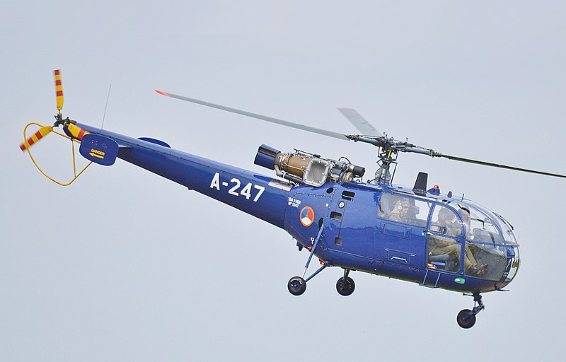

Service History
- Entry into service :
The Alouette III entered service with the Indian Air Force in the 1960s and was locally produced by HAL,
making it an affordable and easily maintained helicopter for India.
- Major Operations :
The Alouette III has been extensively used in both military and rescue operations, notably in the 1965 Indo-Pak War, the
1971 Indo-Pak War, and ongoing high-altitude missions in the Himalayas. It has been critical in delivering supplies, evacuating casualties, and conducting search-and-rescue (SAR) missions.
- Ongoing Service : The Chetak remains operational with the IAF, Army, and Navy, albeit in reduced numbers, due to its success in high-altitude and short-range transport roles.
Technical Specifications
- Weight : Approximately 1.2 tons (empty weight).
- Engine : Powered by a single Turbomeca Artouste IIIB turboshaft engine, generating 870 horsepower.
- Speed : Capable of speeds up to 210 km/h (130 mph).
- Armament :
Could be equipped with rocket pods and machine guns for light attack roles, especially during counterinsurgency operations.
- Capacity: Typically capable of carrying up to 5 passengers or two stretchers for medical evacuation.
- Notable Feature : Its excellent high-altitude performance made it well-suited for operating in mountainous regions, including the Himalayas.
- Range : Operational range of around 540 km.
- Crew : Operated by a crew of two (pilot and co-pilot), with optional onboard personnel depending on the mission.
Historical Significance
The Alouette III (Chetak) has been instrumental in establishing India’s ability to conduct reliable high-altitude and mountainous operations.
It was one of the first helicopters in the IAF capable of performing search-and-rescue and medical evacuation missions in remote areas, greatly
expanding India’s rotary-wing operational scope. Its production by HAL also contributed to India’s self-reliance in helicopter production.
Notable Missions
- 1971 Indo-Pak War: The Alouette III (Chetak) was used in forward areas for reconnaissance, casualty evacuation, and rapid deployment of troops.
Its ability to operate close to the battlefield allowed for quick evacuation of wounded personnel.
- High-Altitude Missions in Siachen and Ladakh: The Alouette III has regularly been used in the Siachen Glacier and Ladakh region to
supply remote posts and conduct casualty evacuations at high altitudes. It is often called the "workhorse of the Himalayas."
- Disaster Relief Operations: The Alouette III has been deployed in numerous disaster relief missions across India, including floods and earthquakes,
providing critical relief and evacuation capabilities.